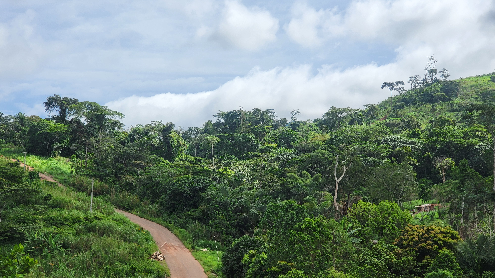
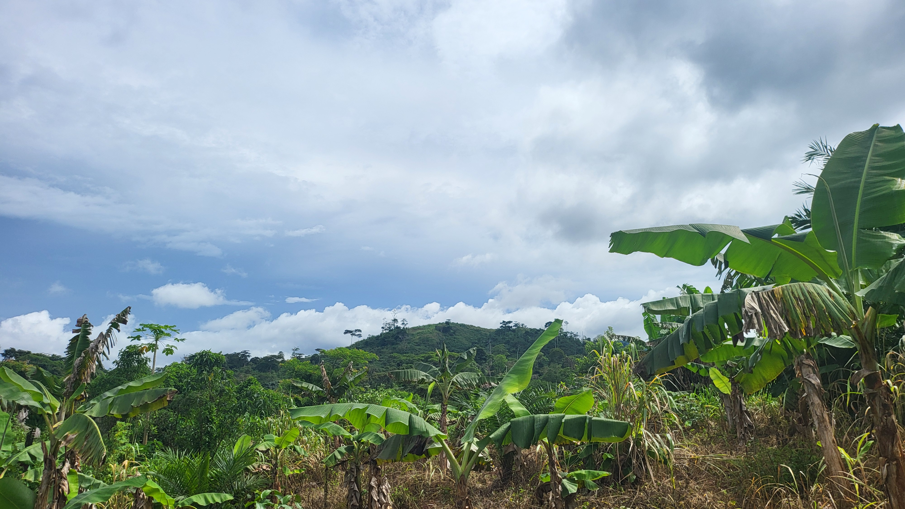

À Propos de IBCE-RC

Nés de la Forêt, Engagés pour la Vie
IBCE-RC — Institut du Bassin de Congo pour l'Environnement et la Résilience Climatique — a été fondé par des passionnés de la nature conscients de la pression croissante exercée sur les forêts du Cameroun et du Bassin du Congo.
Face à la déforestation, à la perte de biodiversité et à l'insécurité alimentaire des communautés rurales, nos fondateurs ont choisi une approche intégrée : protéger la forêt en accompagnant les hommes et les femmes qui en vivent, en leur proposant des alternatives agricoles durables et rentables.
Depuis plus de 15 ans, nous travaillons sur le terrain avec les agriculteurs, les jeunes et les autorités locales pour bâtir un modèle de développement où nature et humanité coexistent harmonieusement.
Voir nos projets →Mission, Vision & Approche
Notre Mission
Protéger et restaurer les écosystèmes forestiers du Cameroun en développant des pratiques agroforestières durables qui améliorent les conditions de vie des communautés rurales tout en préservant la biodiversité du Bassin du Congo.
Notre Vision
Un Cameroun où les forêts prospèrent, la biodiversité est préservée pour les générations futures, et les communautés rurales vivent dignement grâce à des systèmes agricoles durables qui respectent et nourrissent l'environnement.
Notre Approche
Nous croyons que la conservation réussit quand elle est portée par les communautés locales. Notre approche participative intègre les savoirs traditionnels, la science moderne et l'engagement citoyen pour des solutions durables.
Les Principes qui Nous Animent
Chaque action de IBCE-RC est guidée par des valeurs fondamentales qui reflètent notre engagement profond envers la nature et les communautés.
Respect de la Nature
La nature n'est pas une ressource à exploiter mais un bien commun à protéger. Chaque décision que nous prenons est évaluée à l'aune de son impact environnemental.
Ancrage Communautaire
Les communautés locales sont les premiers gardiens de la nature. Nous les plaçons au cœur de tous nos programmes et respectons leurs savoirs traditionnels.
Rigueur Scientifique
Nos décisions sont fondées sur des données fiables. Inventaires biologiques, suivis écologiques et évaluations d'impact guident nos interventions.
Durabilité
Nous concevons des projets qui perdurent au-delà de notre présence, en renforçant les capacités locales et en créant des dynamiques autonomes et pérennes.
Solidarité Internationale
La crise climatique est globale. Nous collaborons avec des partenaires africains et internationaux pour amplifier l'impact de nos actions sur le terrain.
Innovation
Face à l'urgence écologique, nous développons constamment de nouvelles approches : nouvelles espèces à pépinière, techniques d'irrigation innovantes, outils de monitoring.
Ceux Qui Font IBCE-RC
Des passionnés de la nature, agronomes, biologistes et animateurs communautaires unis par un même idéal : un Cameroun vert et prospère.
Dr. Jean-Baptiste Mvondo
Directeur ExécutifAgronome spécialisé en agroforesterie tropicale, 20 ans d'expérience dans la conservation des forêts du Bassin du Congo.
Dr. Ange Nkolo Ateba
Responsable BiodiversitéBiologiste et écologue, spécialiste des écosystèmes forestiers camerounais et de l'inventaire des espèces menacées.
Paul Essomba
Coordinateur TerrainIngénieur agronome, il coordonne les activités de terrain et assure la formation des agriculteurs aux techniques durables.
Marie-Thérèse Banga
Responsable PépinièresTechnicienne horticole, elle gère la production et la distribution de 50 000 plants par an dans nos pépinières communautaires.
Emmanuel Fouda
Animateur CommunautaireAncien agriculteur devenu formateur, il est le lien vivant entre l'équipe de IBCE-RC et les 320 familles partenaires.
Sylvie Mengue
Responsable CommunicationJournaliste environnementale, elle documente nos actions et assure la visibilité de IBCE-RC auprès du grand public et des partenaires.

Rejoignez Notre Mission
Que vous soyez particulier, entreprise ou institution, votre soutien est précieux pour amplifier notre impact sur la forêt et les communautés du Cameroun.